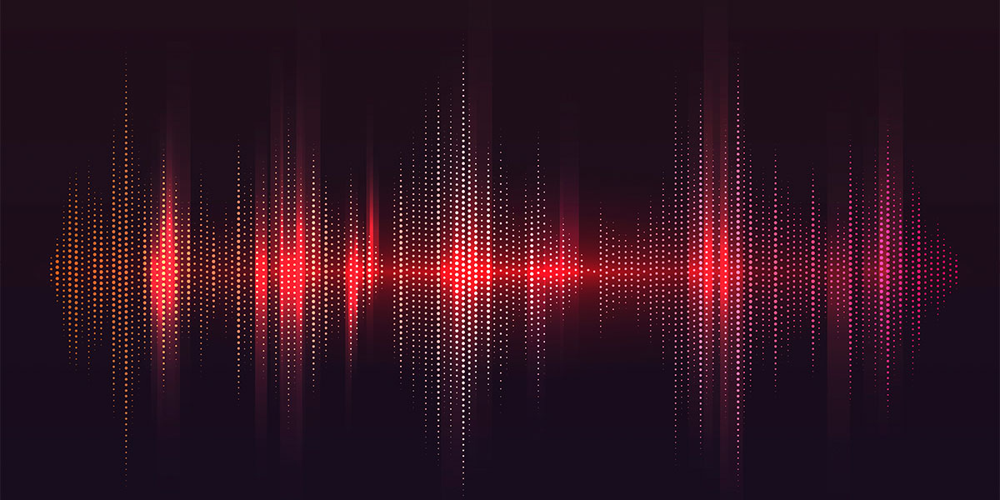
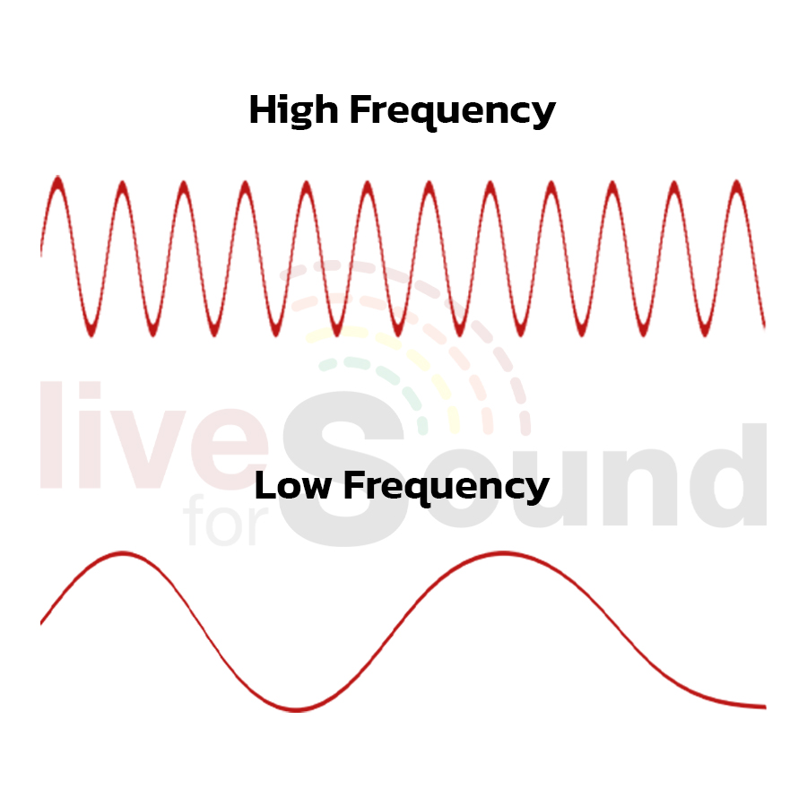
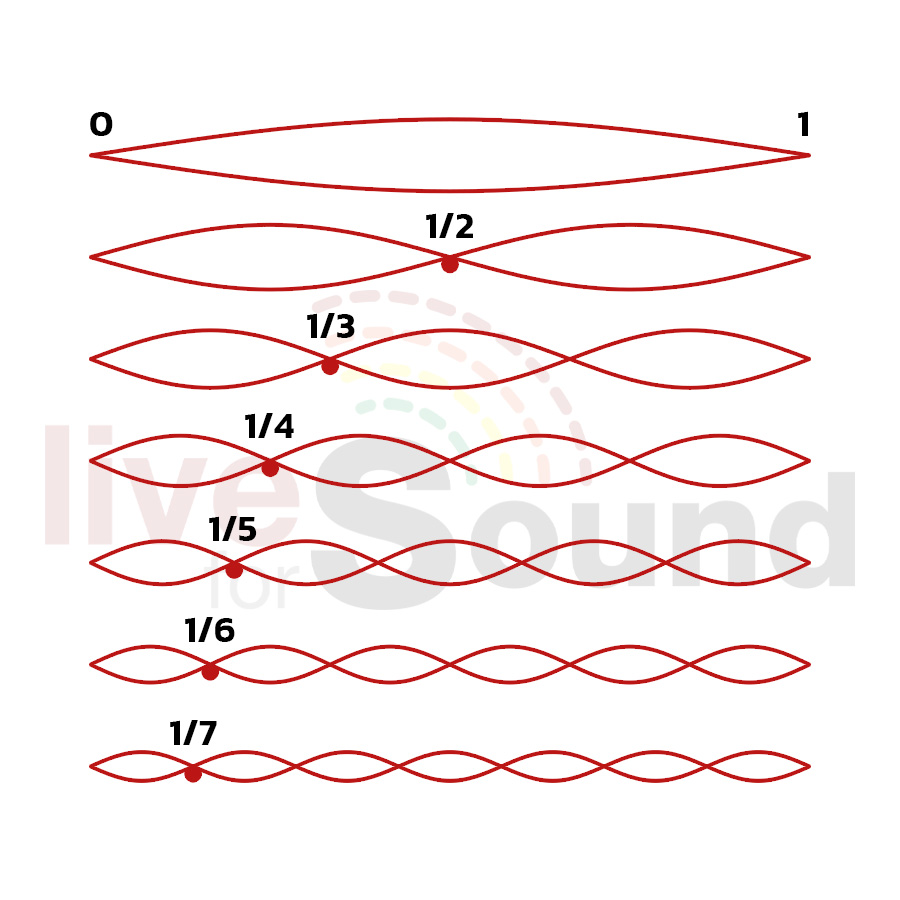
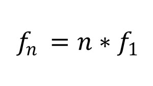

<link rel="stylesheet" href="../article/article.css">

<header>
    <div class="header-banner">
        <h1>Fundamental and Harmonic frequency</h1>
    </div>
    <div class="clear"></div>
    <nav>
        <div class="site-title">Fundamental and Harmonic frequency</div>
        <ul>
            <li><a href="../index.html">Home</a></li>
            <li><a href="../Theory/Theory.html">Theory</a></li>
            <li><a href="../test/index.html">Test</a></li>
            
        <ul>
    </nav>
</header>
     
<section class="content">
    <article>
        <h1>ความถี่พื้นฐานและฮาร์มอนิก</h1>
        <p></p>
        <p>คลื่นเสียงที่ได้ยินจะประกอบไปด้วยความถี่หลาย ๆ ความถี่ หรือแค่ความถี่เดียว ขึ้นอยู่กับแหล่งกำเนิดเสียง ถ้าหากแหล่งกำเนิดเสียงปล่อยความถี่มาแค่ความถี่เดียว คำถามคือ เราได้ยินความถี่ที่ปล่อยออกมาความถี่เดียวใช่หรือไม่ คำตอบคือไม่ใช่เสมอไป เพราะจะมีความถี่อื่น ๆ เกิดขึ้นตามมาอีกด้วย เรามาทำความเข้าใจกันเรื่องของความถี่กัน</p>
        <br>
        <h1>ความถี่พื้นฐาน</h1>
        <h1>Fundamental Frequency</h1>
        <br>
        <p></p>
        <br>
        <p>คือ ความถี่ต่ำสุดของคลื่นเสียงที่แหล่งกำเนิดเสียงเปล่งออกมา หรือถ้าในทางดนตรีก็คือความถี่ของตัวโน้ตที่เล่น ยกตัวอย่างเช่น โน้ตตัว A ในทางสากล หรือตัว ลา ในภาษาไทย มีความถี่อยู่ที่ 440Hz ถ้าเรากดเปียโนตรงโน้ตตัว A กลาง เราก็จะได้ยินเสียงที่เป็นความถี่มูลฐานคือความถี่ 440Hz  และจะมีความถี่อื่น ๆ เกิดขึ้นตามมาอีก เราจะเรียกว่า ฮาร์มอนิก</p>
        <br>
        <br>
        <h1>ความถี่ฮาร์มอนิก</h1>
        <h1>Harmonic Fraquency</h1>
        <br>
        <p></p>
        <br>
        <p>คือ ความถี่ที่มีจำนวนเต็มเท่าของความถี่พื้นฐาน นั่นคือเมื่อแหล่งกำเนิดเสียงปล่อยความถี่พื้นฐานออกมา 1 ความถี่ เราก็จะได้ยินความถี่อื่น ๆ พร้อมกับความถี่พื้นฐานด้วย ซึ่งความถี่ที่ได้ยินตามมานี้เราเรียกว่า Harmonic (ฮาร์มอนิก) ยกตัวอย่างเช่น ถ้าเรากดลิ่มเปียโนที่โน้ตตัว A กลาง ที่มีความถี่ 440Hz เสียงที่เราได้ยินนั้นจะมีความถี่อื่นปนมาด้วย ความถี่อื่นที่ปนมานั่นคือความถี่ฮาร์มอนิก ถ้าสังเกตดี ๆ เวลาเล่นเครื่องดนตรีแต่ละชนิดนั้น ต่อให้เราเล่นโน้ตตัวเดียวกัน เสียงที่ได้ยินก็ไม่เหมือนกัน เพราะเครื่องดนตรีแต่ละชนิดนั้นจะมีฮาร์มอนิกที่ต่างกัน เสียงพูดหรือเสียงร้องเพลงของมนุษย์แต่ละคน มีเสียงไม่เหมือนกันเพราะมีความแตกต่างของความถี่ฮาร์มอนิก</p>
        <br>
        <p>การนับความถี่ฮาร์มอนิกนั้น สามารถนับได้ด้วยการนำความถี่พื้นฐานไปคูณด้วยเลขฮาร์มอนิกที่ต้องการหา สูตรคือ</p>
        <p></p>
        <p>เมื่อ</p>
        <p>ƒn คือ ความถี่ฮาร์มอนิกที่ต้องการหา</p>
        <p>n  คือ เลขฮาร์มอนิกที่ต้องการหา</p>
        <p>ƒ1 คือ ความถี่พื้นฐานของฮาร์มอนิกที่ต้องการหา เพราะความถี่พื้นฐานก็คือฮาร์มอนิกที่ 1</p>
        <p>ความถี่ฮาร์มอนิกนั้นแบ่งเป็น ฮาร์มอมิกเลขคี่ (Odd Harmonic) กับ ฮาร์มอนิกเลขคู่ (Even Harmonic) </p>
    </article>
       <!-- 
    <aside>
        
        
    </aside>-->
</section> 
  

<script src="../article/article.js"></script>